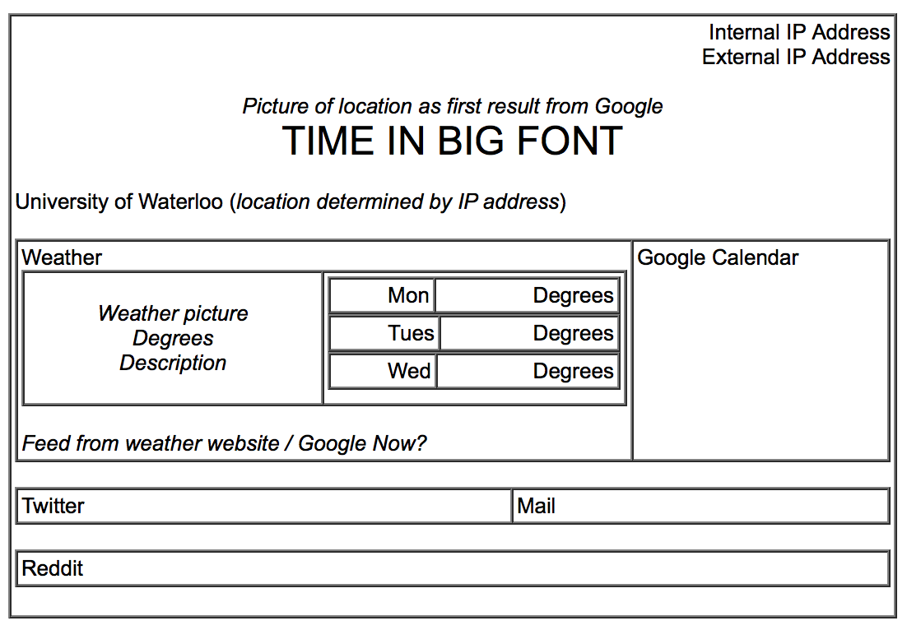

Pi Day is an experiment created in order to facilitate my learning of Python, using APIs, and creating a full screen desktop GUI. The project is currently in progress and will be switched to a public repository on Github when released.
Here is a basic outline of the current plan of how it will look when it is finished:
After I got a Raspberry Pi, I decided to learn Python as a way to tests its capabilities. I set Pi-Day as my goal to keep me motivated, and I used the online textbook Learn Python the Hard Way to figure out the basics of Python. I also followed the API lessons on Codecademy as all the information I had to display were being pulled from online sources.
The current version fetches API keys and user information from a JSON file and fetches the following information and outputs it to the console:
The output has been posted on pastebin here
The current to-do list is: